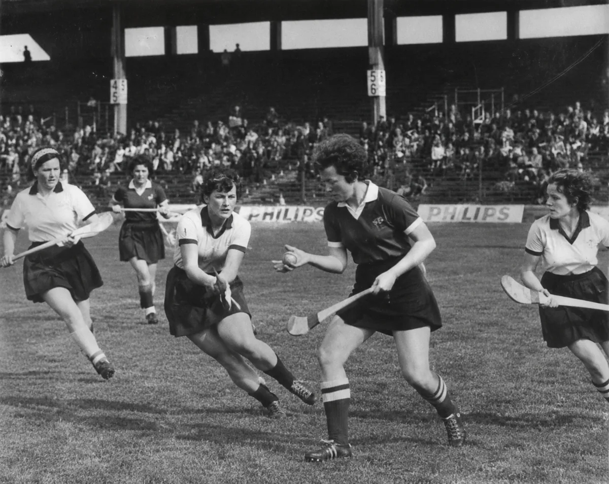
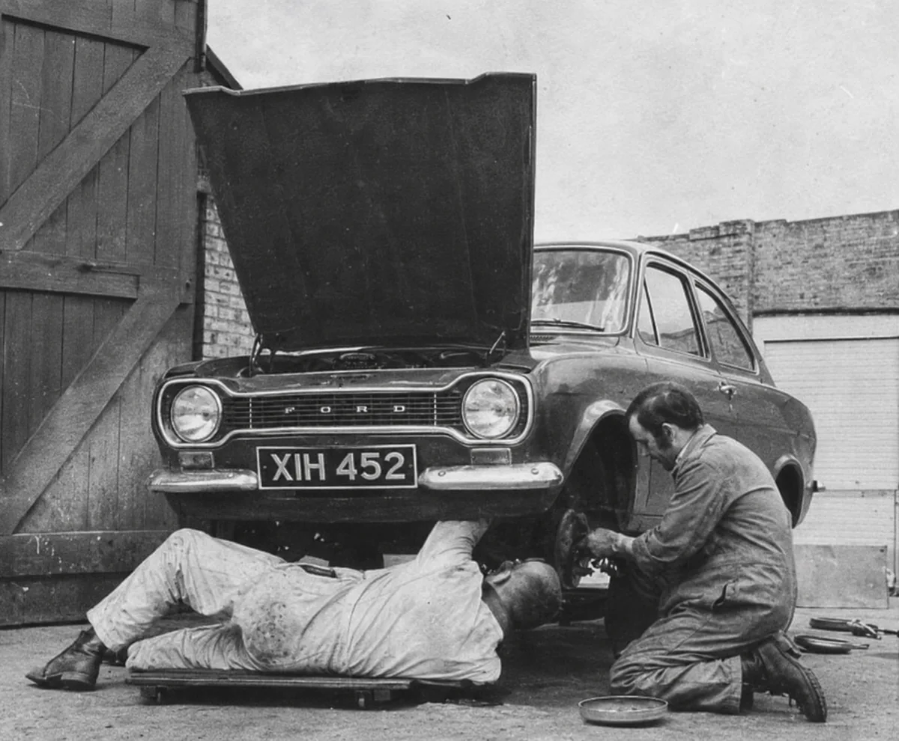
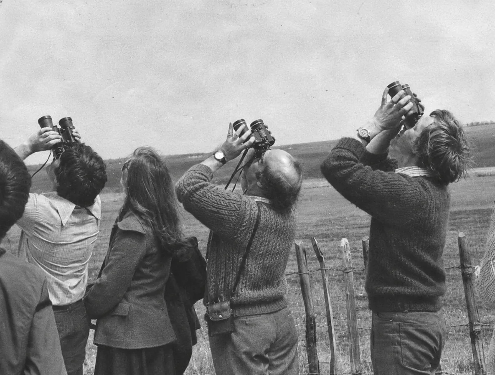
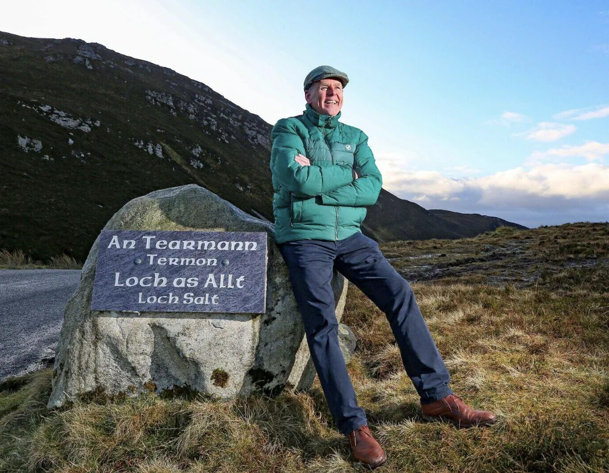

Team
Coaching

Good leadership
makes room for
different perspectives.
Every organisation has people with valuable experience, ideas and perspectives. But in the demands of day-to-day work, there isn't always the time or opportunity for those voices to be heard.
I work with teams across business, education and other organisations, taking a wider look at how people work together, communicate and contribute to the direction of their organisation.
Team coaching creates that opportunity.
Taking aWIDERVIEW
One of the approaches I use in team coaching is what I call the helicopter view. It's an opportunity to step away from the day-to-day and look at the organisation as a whole.
Sometimes I'll ask people to draw how they see their organisation. It's interesting how differently people can picture the same place. One person might see a pyramid, another a tunnel or a sand timer, and somebody else something entirely different.
Those drawings can open up conversations that might not otherwise happen, helping people recognise assumptions and consider perspectives they hadn't thought about before.
What are we not hearing?

Often, the conversations reveal things that aren't immediately obvious to those leading the organisation. Unclear expectations, assumptions about people's experiences, gaps in communication or ideas that haven't had an opportunity to surface.
We also look beyond the immediate team, considering the wider people and communities who have a connection to the organisation and are affected by its decisions.
We begin by exploring what’s actually happening.
- How well do people understand the organisation's direction?
- Do they feel comfortable raising concerns or questioning decisions?
- What are people’s take on psychological safety?
- Are there opportunities to contribute ideas, regardless of their position or title?
- When small ideas are raised or mooted or hatched do they stay just as an idea?
- Who’s in charge of closing the loop?
The people closest to a challenge often have valuable insights into how it might be addressed.
I like to include the quietest voice.I listen harder to the person of few words.I know what it’s like to be invisible.It ain’t a good place to be.It doesn’t have to be.
Everyone’s voice matters.
Every voice counts.
That’s a must for me.
My role is to create an environment where people can speak openly and the team can begin developing its own responses to the challenges it identifies.

Rediscovering the power of
purpose, connection
and collective effort.
It’s easy for the day-to-day demands to take up the whole conversation. Taking a step back gives us room to remember what we’re working towards, recognise what we each bring and consider what we can do together.
And what happens next?
Working with your team
I generally work with groups of around 12 to 15 people. This gives everyone an opportunity to contribute and allows us to explore different perspectives in a meaningful way.
The conversations and activities are shaped around your organisation, the people involved and what you're hoping to explore together.
If you're considering team coaching, we can start with a conversation about what might be useful for your organisation.
Get in touch
Making coaching accessible
I include a small amount of pro bono work within my professional coaching practice because I believe in making coaching accessible and in supporting organisations and teams where I believe the work can make a meaningful contribution.
A few questions you might have.
Does something need to be wrong for team coaching to be useful?
No. It can be a chance to step back, recognise what’s working and consider what you want to build on together. You don’t need to arrive with everything neatly worked out.
What if some people are reluctant to speak?
I like to include the quietest voice. I listen harder to the person of few words.
Part of the work is understanding how comfortable people feel speaking openly, questioning decisions or offering a different view. We begin there.
Who takes part? Does that include the team leader?
We can talk this through beforehand. Who takes part, and how, needs to support an honest conversation.
There may be times when it helps for those leading the team to listen without joining in, giving others room to speak for themselves.
How much time do we need to set aside?
The arrangements will depend on your team and what you’re hoping to explore. We can discuss the time needed and how we’ll return to the commitments made. Follow-through matters.
How much does team coaching cost?
Get in touch and tell me a little about your team and what you have in mind. We can discuss the work involved and the fees before you decide whether to go ahead.